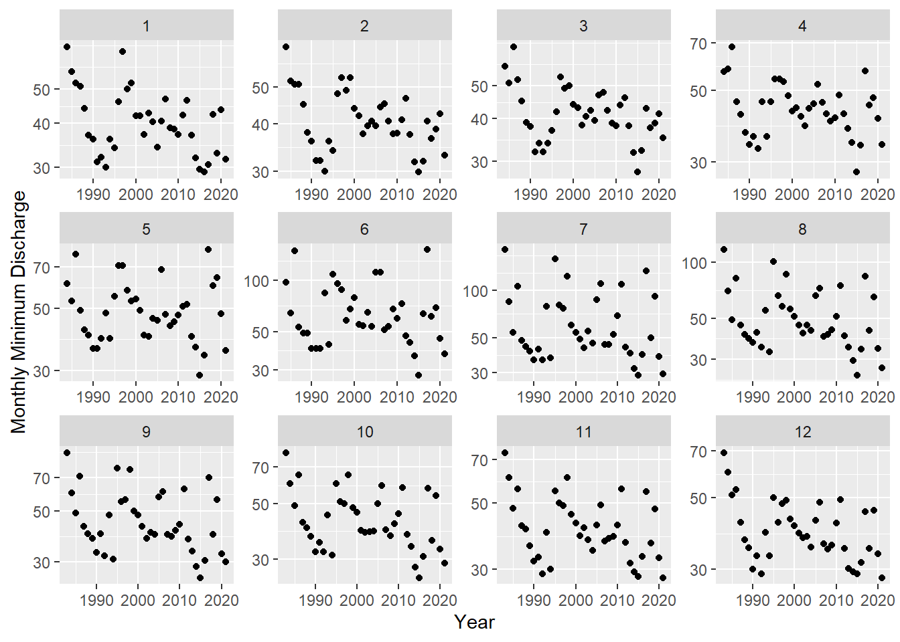
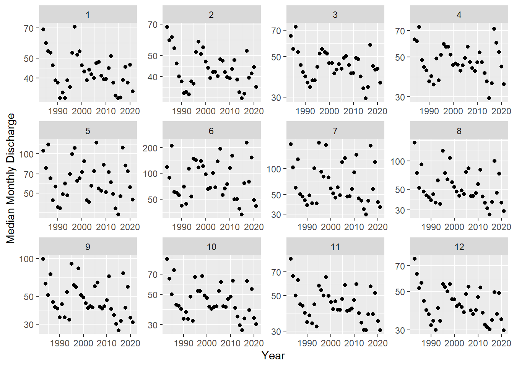
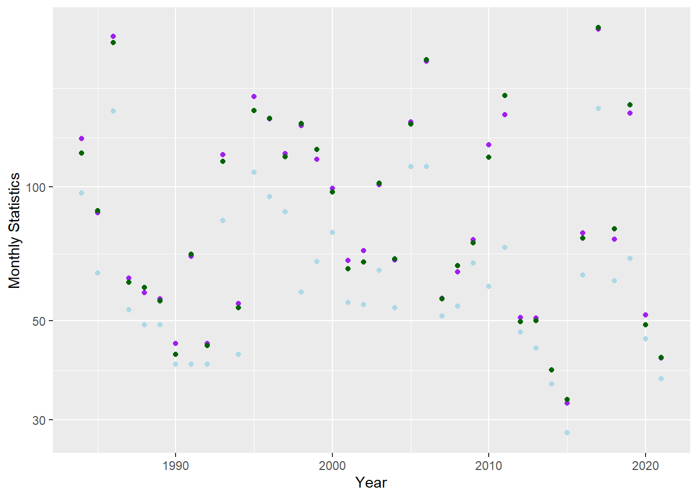

4 Question in Consideration
How is climate change affecting ground water levels that can influence base flows in surface water discharge along Hot Creek near Mammoth Lakes, California?
4.1 Site Analysis
site_ca <- "10265150"
q_ca <- readNWISdv(siteNumbers = site_ca,
parameterCd = '00060',
startDate = '1983-07-07',
endDate = '2021-12-18') %>%
rename(q_cfs = X_00060_00003) %>%
addWaterYear(.) %>%
select(-agency_cd, -X_00060_00003_cd)4.2 Monthly Water Trends
q_month_means <- q_ca %>%
dplyr::mutate(month = month(Date),
year = year(Date)) %>%
group_by(year, month) %>%
summarize(q_mean = mean(q_cfs, na.rm = T))## `summarise()` has grouped output by 'year'. You can override using the `.groups` argument.head(q_month_means) ## # A tibble: 6 x 3
## # Groups: year [1]
## year month q_mean
## <dbl> <dbl> <dbl>
## 1 1983 7 209.
## 2 1983 8 155.
## 3 1983 9 103.
## 4 1983 10 90.6
## 5 1983 11 84.2
## 6 1983 12 78.34.3 Trends in September
q_sept <- q_month_means %>%
filter(month ==9)
ggplot(q_sept, aes( x= year, y= q_mean)) +
geom_point() +
scale_y_log10() +
ylab('Q (cfs)') +
xlab('Water Year') 
4.4 Test for Trends
*** Mann-Kendall independant trend test that does not correlate variables
mk.test(log10(q_sept$q_mean))##
## Mann-Kendall trend test
##
## data: log10(q_sept$q_mean)
## z = -2.5645, n = 39, p-value = 0.01033
## alternative hypothesis: true S is not equal to 0
## sample estimates:
## S varS tau
## -213.0000000 6833.6666667 -0.2874494sens.slope(q_sept$q_mean)##
## Sen's slope
##
## data: q_sept$q_mean
## z = -2.5645, n = 39, p-value = 0.01033
## alternative hypothesis: true z is not equal to 0
## 95 percent confidence interval:
## -0.99555556 -0.08291667
## sample estimates:
## Sen's slope
## -0.5Describe trend.
From the graph and statistical test for the data from the month of September there is a slightly negative trend but not greatly significant. The p value is less than 0.05 meaning the data is less accurate to the actual trend and having a negative Sen’s Slope refers to the small magnitude of the trend. However overall there seems to be a negative trend in the graph where discharge is decreasing over the years.
4.5 Trend for March
q_march <- q_month_means %>%
filter(month == 3)
ggplot(q_march, aes( x= year, y= q_mean)) +
geom_point() +
scale_y_log10() +
ylab('Q (cfs)') +
xlab('Water Year') 
4.6 All months with minimum and median Q
q_stats <- q_ca %>%
dplyr::mutate(month = month(Date),
year = year(Date)) %>%
group_by(year, month) %>%
summarize(q_mean = mean(q_cfs, na.rm = T),
q_min = min(q_cfs),
q_med = median(q_cfs))## `summarise()` has grouped output by 'year'. You can override using the `.groups` argument.head(q_stats)## # A tibble: 6 x 5
## # Groups: year [1]
## year month q_mean q_min q_med
## <dbl> <dbl> <dbl> <dbl> <dbl>
## 1 1983 7 209. 182 192.
## 2 1983 8 155. 117 157
## 3 1983 9 103. 90 99.5
## 4 1983 10 90.6 80 91
## 5 1983 11 84.2 74 84.5
## 6 1983 12 78.3 69 774.7 Plot of all months
# mean
ggplot(q_month_means, aes(x= year, y= q_mean)) +
geom_point() +
facet_wrap(~month, scales = 'free') +
scale_y_log10() +
ylab('Mean Monthly Discharge') +
xlab('Year')
# minimum
ggplot(q_stats, aes(x= year, y= q_min)) +
geom_point() +
facet_wrap(~month, scales = 'free') +
scale_y_log10()+
ylab('Monthly Minimum Discharge') +
xlab('Year')
# median
ggplot(q_stats, aes(x= year, y= q_med)) +
geom_point() +
facet_wrap(~month, scales = 'free') +
scale_y_log10()+
ylab('Median Monthly Discharge') +
xlab('Year')
Describe trends without a trend test.
All of these graphs have a general pattern where the highest values occur in May through September. Each month also has a slightly negative trend as the years go on which could correlate to drought conditions in the west. The negative trend is more noticeable in December which is usually the time of baseflows therefore can be subjectively supportive to the decreasing discharge hypothesis.
##Practice
##Plot to compare median and minimum
Not sure how to make a nice legend Easier coding to have multiple variables on a graph?
ggplot(q_stats, aes(x= year)) +
geom_point(aes(y=q_mean), color = "purple") +
geom_point(aes(y=q_min), color = "light blue") +
geom_point(aes(y=q_med), color = " dark green") +
facet_wrap(~month, scales = 'free') +
scale_y_log10() +
ylab("Monthly Statistics") 
4.8 Monthly stat comparison of June
q_june <- q_stats %>%
filter(month == 6)
ggplot(q_june, aes(x= year)) +
geom_point(aes(y=q_mean), color = "purple") +
geom_point(aes(y=q_min), color = "light blue") +
geom_point(aes(y=q_med), color = " dark green") +
scale_y_log10() +
ylab("Monthly Statistics") +
xlab("Year")